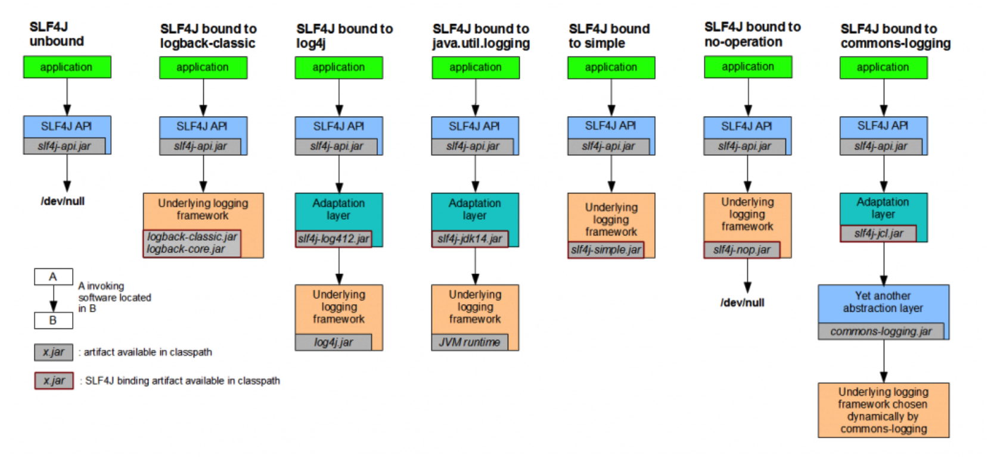
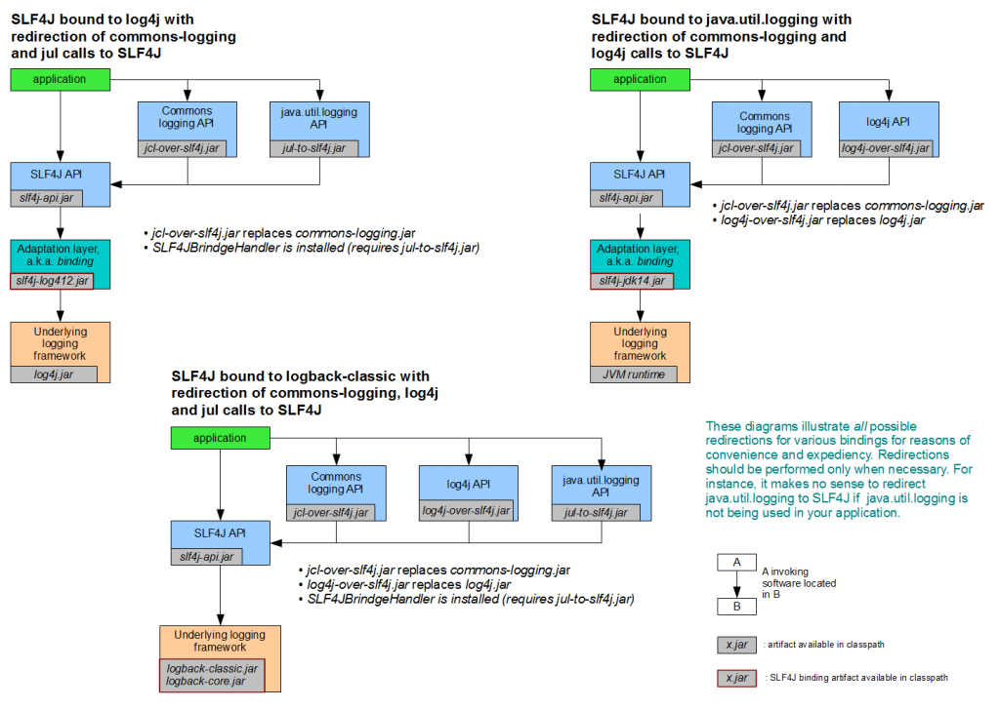

日志框架的概念
日志的作用是用来追踪和记录我们的程序运行中的信息，我们可以利用日志很快定位问题，追踪分析。
日志级别
首先要知道日志级别是干什么用的，日志级别是当你使用不同的方式运行的时候，根据你运行的方式和你设置的日志打印级别来确定哪些信息需要输出。
规定：日志只会打印设置的优先级及比自己高优先级的内容。
日志级别优先级排序: OFF > FATAL > ERROR > WARN > INFO > DEBUG > TRACE > ALL
- OFF：
- FATAL：
- ERROR：
- WARN：
- INFO：
- DEBUG：
- TRACE：
- ALL：
常用的日志框架
Jul: Java Util Logging
Sun公司的日志框架，原生的日志框架，优点是使用非常简单，直接在 JDK 中就可以使用。但 JDKLog 功能比较太过于简单，不支持占位符显示，拓展性比较差，所以现在用的人也很少。
示例：1
2
3
4
5
6
7
8
9
10
11
12
13import java.util.logging.Logger;
/****
** JDKLog Demo
**/
public class JDKLog
{
public static void main( String[] args )
{
Logger logger = Logger.getLogger("JDKLog");
logger.info("Hello World.");
}
}
Log4j
Apache的日志框架，有多个分级（DEBUG/INFO/WARN/ERROR）记录级别，可以很好地将不同日志级别的日志分开记录，极大地方便了日志的查看。
引入依赖包
1
2
3
4
5<dependency>
<groupId>log4j</groupId>
<artifactId>log4j</artifactId>
<version>1.2.17</version>
</dependency>log4j.properties
1
2
3
4
5
6
7
8
9
10
11
12
13
14
15
16
17
18
19
20
21
22
23
24### 设置###
log4j.rootLogger = debug,stdout,D,E
### 输出信息到控制抬 ###
log4j.appender.stdout = org.apache.log4j.ConsoleAppender
log4j.appender.stdout.Target = System.out
log4j.appender.stdout.layout = org.apache.log4j.PatternLayout
log4j.appender.stdout.layout.ConversionPattern = [%-5p] %d{yyyy-MM-dd HH:mm:ss,SSS} method:%l%n%m%n
### 输出DEBUG 级别以上的日志到=E://logs/error.log ###
log4j.appender.D = org.apache.log4j.DailyRollingFileAppender
log4j.appender.D.File = E://logs/log.log
log4j.appender.D.Append = true
log4j.appender.D.Threshold = DEBUG
log4j.appender.D.layout = org.apache.log4j.PatternLayout
log4j.appender.D.layout.ConversionPattern = %-d{yyyy-MM-dd HH:mm:ss} [ %t:%r ] - [ %p ] %m%n
### 输出ERROR 级别以上的日志到=E://logs/error.log ###
log4j.appender.E = org.apache.log4j.DailyRollingFileAppender
log4j.appender.E.File =E://logs/error.log
log4j.appender.E.Append = true
log4j.appender.E.Threshold = ERROR
log4j.appender.E.layout = org.apache.log4j.PatternLayout
log4j.appender.E.layout.ConversionPattern = %-d{yyyy-MM-dd HH:mm:ss} [ %t:%r ] - [ %p ] %m%n
Log4J2
Log4j升级版，2.x的版本在架构上进行了一些升级，配置文件也发生了一些变化。
- 引入依赖包
1
2
3
4
5
6
7
8
9
10
11<!-- Log4J -->
<dependency>
<groupId>org.apache.logging.log4j</groupId>
<artifactId>log4j-api</artifactId>
<version>2.6.2</version>
</dependency>
<dependency>
<groupId>org.apache.logging.log4j</groupId>
<artifactId>log4j-core</artifactId>
<version>2.6.2</version>
</dependency>
注：log4j和log4j2的依赖包路径是不一样的，这是为了区分log4j和log4j2，开发者专门设置的。
- 增加配置文件 log4j2.xml 放在 resource 目录下：
1
2
3
4
5
6
7
8
9
10
11
12
13
14
15
16
17
18
19
20
21
22
23
24
25
26
27
28
29
30
31
32
33
34
35
36
37
38
39
40
41
42
43<?xml version="1.0" encoding="UTF-8"?>
<configuration status="error">
<!-- 先定义所有的appender -->
<appenders>
<!-- 这个输出控制台的配置 -->
<Console name="Console" target="SYSTEM_OUT">
<!-- 控制台只输出level及以上级别的信息（onMatch），其他的直接拒绝（onMismatch） -->
<ThresholdFilter level="trace" onMatch="ACCEPT" onMismatch="DENY"/>
<!-- 这个都知道是输出日志的格式 -->
<PatternLayout pattern="%d{HH:mm:ss.SSS} %-5level %class{36} %L %M - %msg%xEx%n"/>
</Console>
<!-- 文件会打印出所有信息，这个log每次运行程序会自动清空，由append属性决定，这个也挺有用的，适合临时测试用 -->
<!-- append为TRUE表示消息增加到指定文件中，false表示消息覆盖指定的文件内容，默认值是true -->
<File name="log" fileName="log/test.log" append="false">
<PatternLayout pattern="%d{HH:mm:ss.SSS} %-5level %class{36} %L %M - %msg%xEx%n"/>
</File>
<!-- 添加过滤器ThresholdFilter,可以有选择的输出某个级别以上的类别 onMatch="ACCEPT" onMismatch="DENY"意思是匹配就接受,否则直接拒绝 -->
<File name="ERROR" fileName="logs/error.log">
<ThresholdFilter level="error" onMatch="ACCEPT" onMismatch="DENY"/>
<PatternLayout pattern="%d{yyyy.MM.dd 'at' HH:mm:ss z} %-5level %class{36} %L %M - %msg%xEx%n"/>
</File>
<!-- 这个会打印出所有的信息，每次大小超过size，则这size大小的日志会自动存入按年份-月份建立的文件夹下面并进行压缩，作为存档 -->
<RollingFile name="RollingFile" fileName="logs/web.log"
filePattern="logs/$${date:yyyy-MM}/web-%d{MM-dd-yyyy}-%i.log.gz">
<PatternLayout pattern="%d{yyyy-MM-dd 'at' HH:mm:ss z} %-5level %class{36} %L %M - %msg%xEx%n"/>
<SizeBasedTriggeringPolicy size="2MB"/>
</RollingFile>
</appenders>
<!-- 然后定义logger，只有定义了logger并引入的appender，appender才会生效 -->
<loggers>
<!-- 建立一个默认的root的logger -->
<root level="trace">
<appender-ref ref="RollingFile"/>
<appender-ref ref="Console"/>
<appender-ref ref="ERROR" />
<appender-ref ref="log"/>
</root>
</loggers>
</configuration>
Commons Logging
日志门面，支持运行时动态加载日志组件实现。也就是说，在应用代码中，只需要调用commons logging的接口，底层实现可以是log4j，也可以是Java Util Logging。
Slf4J
与Commons Logging对立的阵营，这是接口，实现是Logback。
Logback
Slf4J的实现。
Commons Logging与Slf4j实现机制对比
- Commons logging实现机制：Commons logging是通过动态查找机制，在程序运行时，使用自己的ClassLoader寻找和载入本地具体的实现。详细策略可以查看commons-logging-*.jar包中的org.apache.commons.logging.impl.LogFactoryImpl.java文件。由于OSGi不同的插件使用独立的ClassLoader，OSGI的这种机制保证了插件互相独立, 其机制限制了commons logging在OSGi中的正常使用。
- Slf4j实现机制：Slf4j在编译期间，静态绑定本地的LOG库，因此可以在OSGi中正常使用。它是通过查找类路径下org.slf4j.impl.StaticLoggerBinder，然后绑定工作都在这类里面进。
如果在项目中如果选择日志框架
- Slf4j实现机制决定Slf4j限制较少，使用范围更广。由于Slf4j在编译期间，静态绑定本地的LOG库使得通用性要比Commons logging要好。
Logback拥有更好的性能。Logback声称：某些关键操作，比如判定是否记录一条日志语句的操作，其性能得到了显著的提高。这个操作在Logback中需要3纳秒，而在Log4J中则需要30纳秒。LogBack创建记录器（logger）的速度也更快：13毫秒，而在Log4J中需要23毫秒。更重要的是，它获取已存在的记录器只需94纳秒，而Log4J需要2234纳秒，时间减少到了1/23。跟JUL相比的性能提高也是显著的。
Commons Logging开销更高 在使Commons Logging时为了减少构建日志信息的开销，通常的做法是：
1
2
3
4if(log.isDebugEnabled()){
log.debug("User name： " +
user.getName() + " buy goods id ：" + good.getId());
}
在Slf4j阵营，你只需这么做：1
log.debug("User name：{} ,buy goods id ：{}", user.getName(),good.getId());
也就是说，slf4j把构建日志的开销放在了它确认需要显示这条日志之后，减少内存和cup的开销，使用占位符号，代码也更为简洁。
- Logback文档免费。Logback的所有文档是全面免费提供的，不象Log4J那样只提供部分免费文档而需要用户去购买付费文档。
如何在项目中使用Slf4J
Slf4J与其他各种日志的桥接
jar包名 | 说明
—|—
slf4j-log4j12-1.7.13.jar | log4j1.2版本的桥接器，你需要将log4j.jar加入classpath。
slf4j-jdk14-1.7.13.jar | java.util.logging的桥接器，JDK原生日志框架。
slf4j-nop-1.7.13.jar|NOP桥接器，默默丢弃一切日志。
slf4j-simple-1.7.13.jar| 一个简单实现的桥接器，该实现输出所有事件到System.err. 只有INFO以及高于该级别的消息被打印，在小型应用中它也许是有用的。
slf4j-jcl-1.7.13.jar| Jakarta Commons Logging 的桥接器. 这个桥接器将SLF4j所有日志委派给JCL。
logback-classic-1.0.13.jar(requires logback-core-1.0.13.jar)|slf4j的原生实现，logback直接实现了slf4j的接口，因此使用slf4j与 logback的结合使用也意味更小的内存与计算开销
具体接入方式如下：
如何桥接遗留的API
在使用不同的框架的时候，可能别人集成的框架不一样。比如Spring Framework集成的是Commons Logging，而XSocket依赖的是Java Util Logging。现在我们需要解决不同框架中的不同日志组件都统一为Slf4J。SLF4J会根据绑定器把日志交给具体的日志实现工具。Slf4J带有几个桥接模块，可以重定向log4j，JCL和Java.util.logging中的api到Slf4J。遗留的api桥接方案
jar包名|作用
—|—
log4j-over-slf4j-version.jar|将log4j重定向到slf4j
jcl-over-slf4j-version.jar|将commons logging里的Simple Logger重定向到slf4j
jul-to-slf4j-version.jar|将Java Util Logging 重定向到slf4j
桥接方式参考下图：
使用slf4j桥接要注意事项
在使用slf4j桥接时要注意避免形成死循环，在项目依赖的jar包中不要存在以下情况:
| 多个日志jar包形成死循环的条件 | 产生原因 |
|---|---|
| log4j-over-slf4j.jar和slf4j-log4j12.jar同时存在 | 由于slf4j-log4j12.jar的存在会将所有日志调用委托给log4j。但由于同时由于log4j-over-slf4j.jar的存在，会将所有对log4j api的调用委托给相应等值的slf4j,所以log4j-over-slf4j.jar和slf4j-log4j12.jar同时存在会形成死循环 |
| jul-to-slf4j.jar和slf4j-jdk14.jar同时存在 | 由于slf4j-jdk14.jar的存在会将所有日志调用委托给jdk的log。但由于同时jul-to-slf4j.jar的存在，会将所有对jul api的调用委托给相应等值的slf4j，所以jul-to-slf4j.jar和slf4j-jdk14.jar同时存在会形成死循环。 |